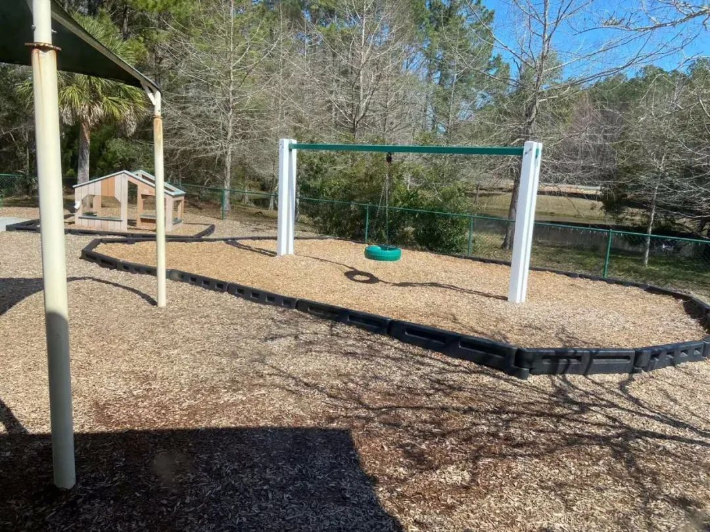
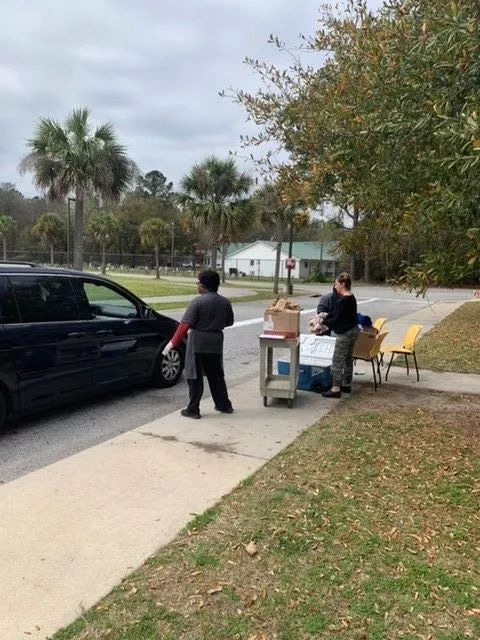
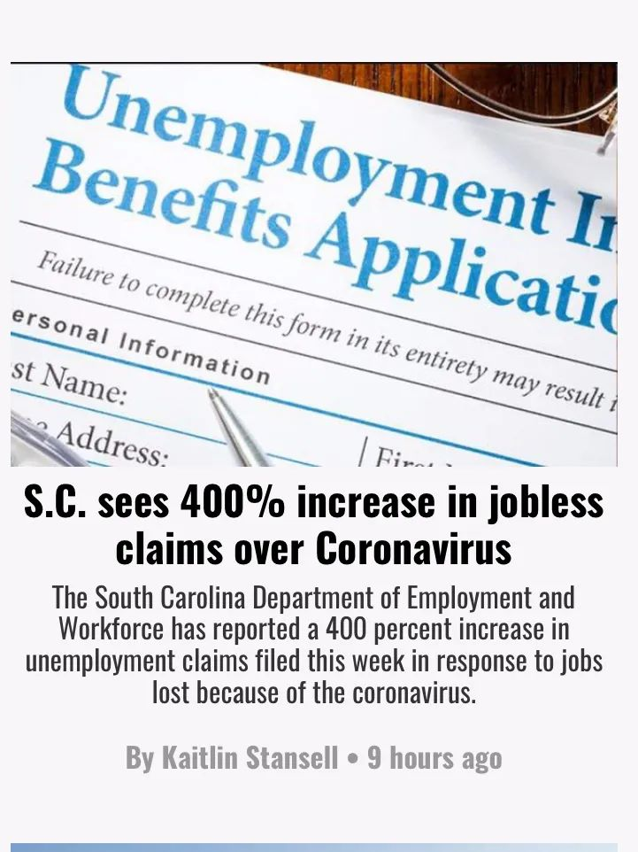

美国“三剑客”救国悬念
原文链接 备份链接 当人类生存的主题被病毒、大流行病裹挟时，在白宫坐镇的特朗普、民间看好的疾病专家安东尼·福西和美联储主席鲍威尔纷纷出招，是老旧的套路还是定海神针，还未可知 文 |《财经》特派记者 金焱 发自华盛顿 编辑 | 苏琦 3 …

事态还在发展，一日多变，州、县、市都发了紧急状态令，3月18日，本地所有餐馆被要求关闭堂吃，一大批员工失业，生计成为问题，政府救济在途。黎明之前将会有一段至暗时刻。我们也只有就地卧倒，保护自己，共渡难关了。
文 | 胡 健
我们所居住的美国南卡罗来纳州的查尔斯顿是一座历史老城，紧邻大西洋，水草丰美，先前也曾阔过。《飘》时代曾与波士顿、纽约、费城齐名，并因其在南方，气候温暖，更适合农作物生长，种植园主财大气粗到可以向北方初兴的工业城市叫板。
南北战争的第一枪就在这里发生，战火烧了四年，南方邦联战败。查尔斯顿遭到屠城般的清洗，被大工业时代的班车甩下，停留在农耕社会，慢节奏，对外面的世界认知不多，容易满足，友善到傻白甜。
小城入选2020南方最易居城市的秀丽影像
整整一个月，当我们每天捏着手机，云操心大洋彼岸新冠疫情，被大量中文信息浸染，心情焦虑的时候，这里风清云淡。老百姓更关心下一届谁当总统，谁更代表他们的利益。2020年是选举年，查尔斯顿又一次成为历史舞台。2月25日，民主党把初选投票前最后一场七名候选人辩论会放在查尔斯顿学院。2月28日，谋求连任的共和党候选人特朗普也来北查尔斯顿集会演讲。

2月28日，特朗普曾到北查尔斯顿演讲
电视上看到大会堂里挤挤攘攘成千上万激动的支持者，已经自觉与人群保持距离的我们感叹：“这样太危险了！谁能保证其中没有带病毒者？”
目测我们身边大多数人还是从选战中得知新冠病毒的。因为两党都把逐渐显现的疫情作为攻击对方的弹药。民主党指责特朗普政府不作为。而特朗普曾坚称：新冠疫情风险很低很低，就像流感，流感每年还袭击美国几千万人，死数万人呢。再说，我们拥有世界上最伟大的专家在应对，多洗手吧！
进入3月，美国确诊人数陡坡式增加。人们发现“最伟大的专家”与总统特朗普调子不一样。疾控中心专家在接受电视采访时说：“疫情在美国蔓延已经不可避免，只是时间问题。”
3月9日，美股在连跌几天后出现几十年来的第一次熔断。资本家出身的特朗普可以轻视科学，但经济下行立刻让他变了脸色。3月11日晚上，他正襟危坐在椭圆办公室，向全国发表电视讲话，主题是新冠疫情。在一个小时的讲话中，第一次不骂民主党，第一次像严肃的总统，并从这天起不再类比流感。

特朗普发表电视讲话 图｜CNN截屏
与他的讲话抢头条的还有更惊动普通美国人的消息：NBA暂停本赛季所有比赛。
美国有线广播电视网主持人叹道：美国人的生活从今晚开始改变了。
可是，查尔斯顿人仍然后知后觉。3月12日，我与本地出生长大的白人女子聊天。她24岁，本地大学毕业后在一家幼儿园当老师，平时喜欢追中国剧，以前跟我探讨过《甄嬛传》。我问：“你担心新冠疫情吗？” 每天换乘两趟公交车上班的她说：“我不担心，我洗手。我也基本不旅行。也许我男朋友会得，他的工作与外国人打交道。如果他得了希望不要传染给我。”

3月12日，我和一名白人女子在这里聊天 摄｜胡健
虽然我满怀忧虑，但也不想危言耸听，于是引用了美国政府所给予的提示说：“你们年轻，得了也会很快痊愈的。”她说：“是的，我们会在医院得到很好的治疗对待。”真是一颗平常心哦，看来是不知道大暴发时医疗资源有可能被挤兑。
我再问：“昨晚特朗普总统向全国的讲话看了吗？”“没有。我不喜欢他！”“那下任总统候选人中你更倾向于谁？”“桑德斯。我已经两次投他了。因为他当选将没有学贷。”

2月26日，桑德斯（右）在南卡罗来纳州默特尔海滩举行竞选活动
“是啊，很多年轻人支持他。听说现在美国大学生的学贷要到四十岁才能还清。”我说道。
“要还到死去。因为毕业工作挣钱还要付房租、食物，至少五十年才能还清。”“你不怕他把社会主义带到这里？”“不怕。我喜欢社会主义，像加拿大一样，免费医疗。”
无学贷，免费医疗，在相对贫穷落后的老南方，应付日常开销似比潜行的病毒更有危机感。再说，查尔斯顿确诊病例不高，至3月16日仅一例，轻度症状，被隔离在家。
有人用当地产的甜草编玫瑰、篮子等摆摊出售，很有老南方特色 摄｜胡健
但流行病学专家的预测数字越来越吓人。当地医院开通了网上问诊系统。所有自感不适的人被要求先上指定网站登记信息，接受评估咨询，一般被医嘱在家休息喝水吃药。如果病史触发新冠预警，则进入下一程序，去搭建在市郊大型停车场上的帐篷点。病人不需要下车，只是打开车窗露出头部，由身穿防护服的医务人员采样，然后回家等结果。
如果阳性，也不一定入院治疗。轻症患者被隔离在家，等自然康复。危重症才送医院，把有限的医疗资源让给最需要的人，最大程度挽救生命。

设在大型停车场上的帐篷检测点 摄｜胡健
全美疫情数字持续以几何级数往上跳。3月13日，“黑色星期五”，一个西俗中不吉利的日子，下午三点多，特朗普迫于局势，宣布美国进入新冠疫情暴发紧急状态。淡定的老南方也欠起身子。
3月15日下午4点，南卡州长顶不住压力，终于宣布所有学校停课。在这之前已有19个州宣布关闭学校，南卡教师工会以保护教师的名义要求停课，联署签名数千人。当天大半个美国关闭了学校。
关闭大学操作上相对简单，而中小学牵涉面就大了。

校车出动提供公共wifi网络，以便学生上网课
12岁以下的孩子单独留在家里，法律方面有限制。因此，家长也得跟着停工回家监护。这里又牵涉到钱的问题，谁来承担？不去工作，就拿不到钱，而大多数美国家庭拿不出500美元以上的生活备用金，房贷、车贷等着付，生计立马成问题。带薪休假？中小企业主也背不起呀。
网课也会让一部分学生掉队。因为有些家庭根本没有电脑，没有网络。
最关键的是低收入家庭的孩子可能要饿肚子了。这些孩子的免费早午餐本来是通过学校供应的，政府没有把这笔补贴给他们的父母，估计是怕被挪作他用，甚至被拿去买酒买毒品。停课后贫困孩子的吃饭问题成为电视新闻直播间各路嘉宾的讨论话题。
解决方案很快公布。学校继续提供免费早午餐，由校车送到沿线站点，家长也可以开车到指定学校领取。

给孩子发放免费早午餐
送餐现场没有口罩，事实上整个查尔斯顿地区几乎没有见到路人戴口罩。商店里的口罩早在一月底就被热心华人买空，运去中国了。现在库存供应医护人员都不够，政府与专家都建议健康民众不要戴口罩。
事态还在发展，一日多变，州、县、市都发了紧急状态令，3月18日，本地所有餐馆被要求关闭堂吃，19日，公共图书馆关闭，20日，公园关闭，一大批员工失业，生计成为问题，政府救济在途。黎明之前将会有一段至暗时刻。我们也只有就地卧倒，保护自己，共渡难关了。

南卡州因失业而去申请领取失业保险的人增加了400%


·火线｜帮新冠肺炎重病人“熬病程”——专访国家卫健委专家组成员管向东教授
新民周刊所有平台稿件， 未经正式授权
一律不得转载、出版、改编或进行
与新民周刊版权相关的其他行为，违者必究


文章已于修改
原文链接 备份链接 当人类生存的主题被病毒、大流行病裹挟时，在白宫坐镇的特朗普、民间看好的疾病专家安东尼·福西和美联储主席鲍威尔纷纷出招，是老旧的套路还是定海神针，还未可知 文 |《财经》特派记者 金焱 发自华盛顿 编辑 | 苏琦 3 …
原文链接 备份链接 据美国《纽约时报》汇总各州公共卫生部门公布的新冠肺炎确诊病例，截至当地时间5日下午，全美已有163例确诊病例，分布在18个州。华盛顿州公共卫生部门5日公布了一例死亡病例，使得全美死亡病例达到了12例。 数据显示，美国 …
原文链接 备份链接 美国约翰斯•霍普金斯大学统计显示，截至当地时间21日13时，美国新冠肺炎确诊病例已超过2万例，死亡278例。三天之内，全美确诊病例从1万例增至2万例。而更有研究分析，美国疫情的峰值最早可能要到5月份才能到来。 美国确 …
原文链接 备份链接 图片来源：视觉中国 记者：崔璞玉 “ 根据该计划，政府将向个人发放最多达1200美元的现金，针对夫妻的发放额为2400美元，每个孩子的现金额为500美元。 ” 美东时间3月19日，参议院多数党领袖米奇·麦康奈 …
原文链接 备份链接 流行病防范创新联盟CEO理查德·哈切特估算，要足够快地开发出新冠肺炎疫苗，需要在未来12到18个月内花费20亿美元 文 |《财经》记者 王晓枫 编辑 | 郝洲 北京时间3月16日晚，由军事科学院军事医学研究院陈薇院士 …